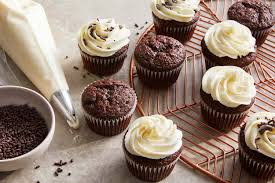
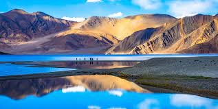
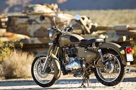
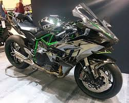
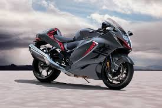
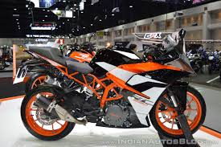

junkfood
Junk food provides empty calories, supplying little or none of the protein, vitamins, or minerals required for a nutritious diet.

veg food
Shahi Paneer is a Mughlai dish where paneer is cooked in a creamy gravy made of onions, yogurt, nut and seeds

nonveg
Biryani is prepared from basmati rice mixed with several spices and cooked in a special way.

desart
A cupcake is a small, sweet baked good topped with frosting. You might bake cupcakes for your best friend's birthday

india gate
The India Gate is a war memorial located near the Kartavya path on the eastern edge of the "ceremonial axis" of New Delhi, formerly called Rajpath.

jaisalmer
Jaisalmer is a former medieval trading center and a princely state in the western Indian state of Rajasthan, in the heart of the Thar Desert.

leh ladak
Ladakh (meaning "land of high mountain passes") is a mountainous region in North India.

mysore palace
Mysore Palace, also known as Amba Vilas Palace, is a historical palace and a royal residence (house).

royal enfield
Royal Enfield is one of the oldest surviving motorcycle manufacturers in the world

kawashaki ninja
Kawasaki Ninja H2R is a super bike available in only 1 variant and 1 colour.

hayabusa
The Suzuki GSX1300R Hayabusa is a sports motorcycle made by Suzuki since 1999

ktm duke 300
KTM 390 Duke is the best street motorcycle with the most powerful option for riders. Check Duke 390 colours, and specifications on KTMIndia.